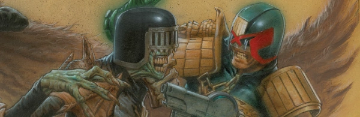

From a dimension where life itself is a crime, Death is the dark mirror to Dredd, and is determined to exterminate all life on the basis that all crimes are committed by the living. Or, as he would have it: "The crime is life. The sentence is death!"
He is often supported by another three Dark Judges: Fear, Fire and Mortis (and all are anyway partly tools of the otherworldly Sisters of Death). There's recently been an extensive, yet relatively gentle retcon of the origin stories for the Dark Judges other-dimensional home of Deadworld by writer Kek-W, although it's difficult to marry exactly with previous versions, such as the Anderson tale Half-Life.
Art by Greg Staples
| Story Title | Parts | Pages | w indicates a wraparound coverCovers | Year(s) | Issues | Writer | Artist | Colourist | Letterer |
|---|---|---|---|---|---|---|---|---|---|
From Judge DreddJudge Death | 3 | 15 | 0 | 1980 | 149-151 | John Wagner | Brian Bolland | [b&w] | Tom Frame |
From Judge DreddJudge Death Lives | 5 | 32 | 224: Brian Bolland 225: Brian Bolland 2 | 1981 | 224-228 | Alan Grant John Wagnervarious | Brian Bolland | pp1‑2 colour in each episode. Episodes lengths: 7, 6, 6, 6, 7 <-- | Tom Frame |
From Anderson Psi Division In‑page title seems to be: "Revenge". Featuring Psi‑Judge Omar.[Four Dark Judges] | 12 | 61 | 418: Robin Smith 419: Kevin O'Neill 423: Cliff Robinson 427: Robin Smith 4 | 1985 | 416-427 | Alan Grant John Wagnervarious | Brett Ewins: 1‑7 Cliff Robinson: 8‑10, 12 Robin Smith: 11 various | [b&w] | Tom Frame |
From Judge Dredd A choose‑your‑own‑adventure comic.You Are Judge Dredd in House of Death | 1 | 20 | 0 | 1986 | Reprints: X1DM1 | Script: Alan Grant, John Wagner Game: Pat Mills various | Bryan Talbot | [b&w] | Tom Frame |
From Judge DreddWhat if…the Judges Did the Ads? | 1 | 6 | 0 | 1987 | Reprints: The Kevin O'Neill Judge Death ad page got reprinted for X1 521 | Alan Grant John Wagnervarious | Brett Ewins Ian Gibson Robin Smith Kevin O'Neill Cam Kennedy various | <-- 2pp, [b&w] | Tom Frame |
From Anderson Psi DivisionBeyond the Void | 2 | 10 | 613: Steve Yeowell 1 | 1989 | 612-613 | Alan Grant | Mick Austin | [b&w] | Tom Frame |
From Judge DreddTale of the Dead Man | 7 | 54 | 662: Steve Cook 668: Jeff Anderson 2 | 1990 | 662-668 | John Wagner | Will Simpson: 1‑4 Jeff Anderson: 5‑7 various | <-- | Tom Frame |
From Judge Dredd | Countdown to NecropolisDear Annie | 2 | 13 | 673: Carlos Ezquerra 1 | 1990 | Reprints: M3.20672-673 | John Wagner | Carlos Ezquerra | <-- | Tom Frame |
From Judge DreddNecropolis | 26 | 174 | 674: Carlos Ezquerra 685: Carlos Ezquerra 690: David Hine 691: Mick Austin 693: Mike Hadley 696: Steve Yeowell 699: Dermot Power 7 | 1990 | Reprints: M3.21‑M3.35674-699 | John Wagner | Carlos Ezquerra | <-- | Tom Frame |
From Young DeathThe Boyhood of a Superfiend | 12 | 79 | M1.03: Duncan Fegredo M1.12: Peter Doherty 2 | 1990-1991 | M1.01-1.12 | listed as Brian Skuter (a character in the story) John Wagner | Peter Doherty | <-- | Gordon Robson: 1‑6, 9 Ellie De Ville: 7‑8 Steve Potter: 10‑12 various |
From Judge DreddTheatre of Death | 2 | 12 | 0 | 1990 | Reprints: X1700-701 | John Wagner | Ron Smith | <-- | Tom Frame |
From Anderson Psi Division Visions of the Dark Judges and the Sisters of Death. Judge Death appears as an internal psychic projection.Engram | 12 | 64 | 713: Mick Austin 760: Mick Austin 2 | 1991 | 712-717, 758-763 | Alan Grant David Roachvarious | David Roach | [b&w] | Steve Potter |
Linked to The Dark Judges No supertitle.Masque of the Judge, Death | 1 | 10 | Jason Brashill1 | 1991 | JDMS4 | Dean Ormston Si Spencervarious | John McCrea | [b&w] | John McCrea |
From Batman / Judge DreddJudgement on Gotham | 1 | 62 | Simon Bisley 1w | 1991 | DC, Fleetway | Alan Grant John Wagnervarious | Simon Bisley | <-- | Todd Klein |
Linked to [Mrs. Gunderson]Tea With Mrs Gunderson | 1 | + 1 credit pages8 | 0 | 1992 | M2.15 | John Wagner | Dean Ormston | <-- | Ellie de Ville |
From Judge DreddJudge Death: The True Story | 2 | 12 | 901: Dermot Power 1 | 1994 | Reprints: X1901-902 | John Wagner | Ian Gibson | <-- | Tom Frame |
From Plagues of NecropolisThat Perfect Skin | 1 | 7 | 0 | 1995 | Reprints: M355 (supplement)M2.80 | Si Spencer | Simon Davis | <-- | Gordon Robson |
From Plagues of NecropolisThe Reign of Fear | 1 | 7 | 0 | 1995 | Reprints: M355 (supplement)M2.81 | Si Spencer | Stuart Mack | <-- | Gordon Robson |
From Plagues of NecropolisSome Passed Over | 1 | 7 | 0 | 1995 | Reprints: M355 (supplement)M2.83 | Si Spencer | Jim O'Ready | <-- | Gordon Robson |
From Judge DreddThe Three Amigos | 6 | + 6 credit pages54 | M3.03: Trevor Hairsine 1 | 1995 | M3.02-M3.07 | John Wagner | Trevor Hairsine | <-- | Tom Frame |
From Judge DreddKilling Grounds | 1 | + 1 credit pages9 | 0 | 1995 | M3.13 | John Smith | Dean Ormston | <-- | Tom Frame |
From Judge DreddDead Reckoning | 7 | + 1 credit pages42 | 1003: Simon Davis 1006: Greg Staples 2 | 1996 | Reprints: X11000-1006 | John Wagner | Greg Staples | <-- | Tom Frame |
From Batman / Judge DreddDie Laughing, Book 1 | ~ | 46 | Glenn Fabry 1 | 1998 | DC, Fleetway | Alan Grant John Wagnervarious | Glenn Fabry: 1‑46 Jason Brashill: 36‑45 Jim Murray: 36‑45 various | <-- | Ellie de Ville |
From Batman / Judge DreddDie Laughing, Book 2 | ~ | 46 | Jim Murray 1w | 1998 | DC, Fleetway | Alan Grant John Wagnervarious | Jim Murray | <-- | Ellie de Ville |
From Judge Dredd Judge Death is not actually in this story.Death Becomes Him | 2 | 12 | 1114: Paolo Parente 1 | 1998 | Reprints: M355 (supplement)1114-1115 | John Wagner | Alex Ronald | Gary Caldwell | Tom Frame |
From Judge DreddA Night With Judge Death | 1 | 6 | Trevor Hairsine 1 | 1999 | 1168 | John Wagner | Andy Clarke Steven Baskervillevarious | Chris Blythe | Tom Frame |
Linked to Anderson Psi DivisionMy Name Is Death | 6 | 36 | 1291: Frazer Irving 1294: Henry Flint and Chris Blythe 2 | 2002 | 1289-1294 | John Wagner | Frazer Irving | [b&w] | Tom Frame |
| The Wilderness Days | 8 | 64 | M209: Greg Staples M211: Frazer Irving [2 versions] 2 | 2003-2004 | M209-M216 | John Wagner | Frazer Irving | [b&w] | Tom Frame |
From Anderson Psi Division Specifically features pre‑Judge Fire as "Fuego".Half-Life | 4 | 48 | 217: Arthur Ranson 1 | 2003-2004 | M214-M217 | Alan Grant Tony Lukevarious | Arthur Ranson | <-- | Annie Parkhouse |
From Anderson Psi DivisionWMD | 6 | 48 | 0 | 2004 | M221-M226 | Alan Grant | Arthur Ranson | <-- | Annie Parkhouse |
From Judge Dredd Featuring Placebo.Placebo | 1 | 6 | John McCrea 1 | 2004 | 1405-S | Rufus Dog | John McCrea | Angus McKie | Simon Parr |
From Cursed Earth KoburnThe Assizes | 1 | 8 | Carlos Ezquerra 1 | 2005 | M239 | Gordon Rennie | Carlos Ezquerra | <-- | Annie Parkhouse |
From Judge Dredd Judge Death is not actually in this story.A Night in Sylvia Plath | 2 | 12 | 0 | 2014 | 1892-1893 | John Wagner | Colin MacNeil | Chris Blythe | Annie Parkhouse |
From Judge DreddDark Justice | 11 | 66 | p2015: Greg Staples [thematic wraparound] 1915: Greg Staples 1921: Greg Staples [wraparound] 2,1w | 2014-2015 | Reprints: http://goo.gl/mgqoWw p2015, 1912-1921 | John Wagner | Greg Staples | <-- | Annie Parkhouse |
From Anderson Psi DivisionA Dream of Death | 1 | 5 | 0 | 2016 | 2000 | Alan Grant | David Roach | [b&w] | Simon Bowland |
From Anderson Psi Division Just a mental projection of Death.Hag Team | 1 | 5 | 0 | 2017 | FCBD7 | Dan Abnett | Dani | John Charles | Sam Gretton |
From The Dark JudgesDominion | 6 | 60 | M386: Nick Percival M389: Nick Percival [w] 1,1w | 2017 | M386-M391 | John Wagner | Nick Percival | <-- | Annie Parkhouse |
| Darkness Descends | 1 | 5 | 0 | 2018 | SFS23 | Leah Moore | Xulia Vicente | Pippa Mather | Annie Parkhouse |
From The Dark JudgesThe Torture Garden | 10 | 100 | M401: Nick Percival [w] M405: Nick Percival M409: Nick Percival [w] 1,2w | 2018-2019 | M400-M409 | David Hine | Nick Percival | <-- | Annie Parkhouse |
From Anderson Psi Division Just a fake Judge Death.Death's Dark Angels | 1 | 9 | George Perez 1 | 2018 | 2100 | Alan Grant | Jake Lynch | [b&w] | Simon Bowland |
| The Judge Who Laughs | 1 | 6 | 0 | 2019 | 2KVS | Rob Williams | Henrik Sahlstrom | <-- | Simon Bowland |
From Anderson Psi Division Just a fake Judge Death.Judge Death: The Movie | 1 | 10 | 0 | 2019 | 2150 | Alan Grant | Jake Lynch | Jim Boswell | Simon Bowland |
From The Dark JudgesDeliverance | 10 | 100 | 425 [w]: Nick Percival 427 [w]: Nick Percival 430: Nick Percival 433: [w]: Nick Percival 3w,1 | 2020-2021 | M424-M433 | David Hine | Nick Percival | <-- | Annie Parkhouse |
Linked to: Judge Dredd The Sisters of DeathCommon Enemy | 1 | 8 | 0 | 2022 | SFS27 | Kek-W | Steven Austin | Jim Boswell | Jim Campbell |
From The Dark JudgesDeath Metal Planet | 10 | 100 | 449 [w]: Nick Percival 453: Nick Percival 456: Nick Percival 458: Nick Percival 1w,3 | 2022-2023 | M449-M458 | David Hine | Nick Percival | <-- | Annie Parkhouse |
| >> Text Stories << | |||||||||
From Judge Dredd Subtitled: A Text Prequel to 'Judgement on Gotham'.Dead Mean | 1 | 5 | 1994 | JDYB'95 | David Bishop | Trevor Hairsine | [b&w] | n/a | |
| >> Posters / Teasers << | |||||||||
From Anderson Psi Division Star Pin‑Up.Judge Anderson | 1 | 1 | 0 | 1981 | 213 | n/a | Biran Bolland | <-- | n/a |
From The Dark JudgesJudge Death | 1 | 1 | 0 | 1988 | 558 | n/a | Garry Leach | <-- | n/a |
From Judge DreddThe Three Amigos | 1 | 2 | 0 | 1995 | M3.03 | n/a | Trevor Hairsine | <-- | n/a |
From Judge Dredd Star Scan.[Judge Dredd & Judge Death] | 1 | 1 | 0 | 1997 | 1025 | n/a | John McCrea | <-- | n/a |
| Dredd's Greatest Foes #1: Judge Death | 1 | 1 | 0 | 1997 | 1037 | n/a | Lol | <-- | n/a |
M1.12 cover reprint.Gallery of Death | 1 | 1 | 0 | 1997 | M3.35 | n/a | Peter Doherty | <-- | n/a |
From The Dark Judges M2.78 cover reprint.Gallery of Death | 1 | 1 | 0 | 1997 | M3.35 | n/a | Jason Brashill | <-- | n/a |
From The Dark Judges Reprint.Gallery of Death | 1 | 1 | 0 | 1997 | M3.35 | n/a | Dean Ormston | <-- | n/a |
Reprint.Gallery of Death | 1 | 1 | 0 | 1997 | M3.35 | n/a | Jason Brashill | <-- | n/a |
[My Name Is Death]Jussstice Will Be Ssserved | 1 | 1 | 0 | 2001 | p2002 | n/a | Frazer Irving | [monochrome] | n/a |
From Judge Dredd Star Scan.[Anderson, Death & Dredd] | 1 | 1 | 0 | 2002 | p2003 | n/a | Jock | Chris Blythe | n/a |
From The Dark JudgesThe Crime is Life: The Sentence is Death | 1 | 2 | 0 | 2003 | X1 [reprint of prog 226] | n/a | Brian Bolland | Adrian Salmon | n/a |
From Great Moments in Thrill‑PowerJudge Death Lives | 1 | 1 | 0 | 2007 | 1526 | n/a | Rufus | <-- | n/a |
From 2000 AD Art Stars Winner![Judge Death] | 1 | 1 | 0 | 2020 | 2172 | n/a | Federico Arevalo | <-- | n/a |
From Judge Dredd Art.A Dream of Death... | 1 | 1 | 0 | 2020 | 2204 | n/a | David Hitchcock | John Charles | n/a |
From Judge Dredd Star Scan.[Dredd, Anderson & the Dark Judges] | 1 | 1 | 0 | 2020 | 2206R | n/a | Vivian Truong | <-- | n/a |
| Merry Chrissstmasss, Lawbreakers! | 1 | 1 | 0 | 2020 | M427 | n/a | Luke Preece | <-- | n/a |
From Judge Dredd Art.[Dredd, Anderson & Death] | 1 | 1 | 0 | 2021 | M429 | n/a | Cliff Robinson | Dylan Teague | n/a |
From The Dark JudgesDeath Metal Planet | 1 | 1 | 0 | 2021 | 2262 | n/a | Nick Percival | <-- | n/a |
| [Judge Death] | 1 | 1 | 0 | 2023 | M461 | n/a | Toby Willsmer | <-- | n/a |
| [Judge Death] | 1 | 1 | 0 | 2023 | M462 | n/a | Tom Newell | John Charles | n/a |
Linked to [The Sisters of Death][Judge Death & the Sisters] | 1 | 1 | 0 | 2024 | M464 | n/a | Peter Doherty | <-- | n/a |
| >> Features << | |||||||||
| 2000 AD Fear-File: Judge Death | 1 | 1 | 0 | 1981 | 2KA'82 | editorial | Brian Bolland | [b&w] | n/a |
From [Features] | ReviewsJudge Death vs. The Mekon | 1 | 2 | 0 | 1985 | 2KA'86 | editorial | reprints | [b&w] | n/a |
From Justice Department Data‑FileJudge Death | 1 | 1 | 0 | 1985 | JDA'86 | editorial | reprint | [b&w] | n/a |
From 2000 I.D.Judge Death | 1 | 1 | 0 | 1990 | 701 | editorial | Cliff Robinson | <-- | n/a |
| Technical Death | 1 | 4 | 0 | 1991 | JDMS4 | Judge Brufen | reprints | [b&w] | n/a |
From Judge Dredd Gatefold cover poster.Necropolis: The Bitter Ending! | ~ | ~ | 1w | 1997 | M3.35 | n/a | Jim Murray | <-- | n/a |
From The Dark Judges [Dredd vs. Death]You Are The Law! | 1 | 4 | 0 | 2003 | X1 | n/a | Screenshots | <-- | n/a |
From The Dark JudgesThe Life of Death | 1 | 8 | 0 | 2003 | X1 | David Bishop | reprints | <-- | n/a |
| >> Floating Covers << | |||||||||
| Skreemer [Judge Death] | ~ | ~ | 1 | 1991 | JDMS4 | n/a | Glenn Fabry | <-- | n/a |
After Meatloaf: Bat Out of Hell.Alternity [Judge Death] | ~ | ~ | 1 | 1996 | JDMS9 | n/a | Jason Brashill | <-- | n/a |
From The Dark JudgesJudge Dredd: Dredd vs Death | ~ | ~ | 1w | 2003 | X1 | n/a | Jock | Chris Blythe | n/a |
From The Fall of DeadworldA World of His Making [Judge Death] | ~ | ~ | 1 | 2024 | 2374 | n/a | Toby Willsmer | <-- | n/a |
| year | episodes | pages |
| 1978 | 0 | 0 |
| 1979 | 0 | 0 |
| 1980 | 3 | 15 |
| 1981 | 5 | 32 |
| 1982 | 0 | 0 |
| 1983 | 0 | 0 |
| 1984 | 0 | 0 |
| 1985 | 12 | 61 |
| 1986 | 1 | 20 |
| 1987 | 1 | 6 |
| 1988 | 0 | 0 |
| 1989 | 2 | 10 |
| 1990 | 41 | 277 |
| 1991 | 22 | 191 |
| 1992 | 1 | 8 |
| 1993 | 0 | 0 |
| 1994 | 2 | 12 |
| 1995 | 10 | 84 |
| 1996 | 7 | 42 |
| 1997 | 0 | 0 |
| 1998 | 2 | 104 |
| 1999 | 1 | 6 |
| 2000 | 0 | 0 |
| 2001 | 0 | 0 |
| 2002 | 6 | 36 |
| 2003 | 7 | 60 |
| 2004 | 12 | 106 |
| 2005 | 1 | 8 |
| 2006 | 0 | 0 |
| 2007 | 0 | 0 |
| 2008 | 0 | 0 |
| 2009 | 0 | 0 |
| 2010 | 0 | 0 |
| 2011 | 0 | 0 |
| 2012 | 0 | 0 |
| 2013 | 0 | 0 |
| 2014 | 3 | 18 |
| 2015 | 10 | 60 |
| 2016 | 1 | 5 |
| 2017 | 7 | 65 |
| 2018 | 6 | 54 |
| 2019 | 8 | 76 |
| 2020 | 4 | 40 |
| 2021 | 6 | 60 |
| 2022 | 4 | 38 |
| 2023 | 7 | 70 |
| 2024 | 0 | 0 |
| 2025 | 0 | 0 |
Comic strip data (excludes other content):